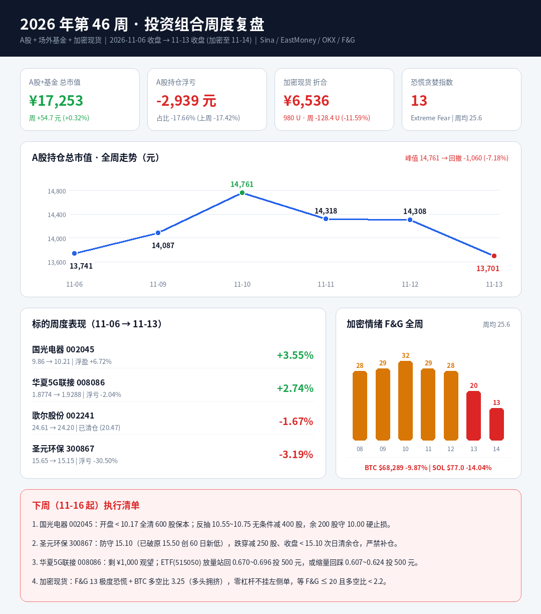

第46周 持仓与市场情绪复盘大结案
A股 + 场外基金(1,841.62份口径) + 加密现货全口径。数据源：Sina / Tencent / EastMoney / OKX / alternative.me。
一 · 总资产与盈亏走势
A股周二 11-10 冲至峰值 14,761 元（+7.42%），随后连跌三日至 13,701 元，峰谷回撤 -1,060 元（-7.18%）。A股+基金合计浮亏 -3,013 元（-14.87%）。本周总资产回撤几乎全部来自加密现货暴跌（-863 元）。
二 · 持仓与观察池周度体检
9.86 → 10.21，周二 11-10 涨停 11.41（周振幅 17.55%），随后周三 -6.40%、周五 -6.59% 急挫至 10.21（最低 10.17）。
均线：MA5 10.72 / MA10 9.99 / MA20 9.31 / MA60 9.02；收盘跌破 MA5 乖离 -4.8%，短期升势中断。
主力全周累计 +1.85 亿，但周三至周五连出三日（-1.71 亿）；周五四档全线流出（-1.03 亿，超大单 -4,259 万）→ 高位派发撤退。10.50 移动止损已被击穿未执行，距 10.17 底线安全垫仅 +0.39%。
→ 开盘 < 10.17 全清 600 股保本；反抽 10.55~10.75 无条件减 400 股，余 200 股守 10.00 硬止损。
15.65 → 15.15，周五跌破前低至 15.12（60 日新低）。MA5 15.61 / MA10 15.67 / MA20 15.60 三线压顶，MA60 16.68 下行，完整空头结构。
全周 5 日主力无一日净流入（累计 -2,683 万，周四 -918 万 / 周五 -985 万），超大单零动作、日均换手 1.2% → 散户存量阴跌失血。
原防守 15.50 已破 -2.26%；下调底线 15.10 安全垫仅 +0.33%。
→ 破 15.10 减 250 股，收盘 < 15.10 次日清余仓；严禁再下移止损或补仓摊薄。
24.61 → 24.20，周二冲高 26.48 后连调三日，周五缩量（换手 2.19%）精准回踩 MA10（24.24）。中长期多头排列未破。
全周主力净流入 +4.70 亿（周二 +7.12 亿，后三日回吐 -3.04 亿；周五超大单仍 +2,470 万）→ 高位换手整固。
→ 现价不追，且在现有持仓未腾出空间前严禁开新仓。
净值 1.8774 → 2.0821 (11-11 峰值) → 1.9288。底层 515050 周 +3.30%（0.637 → 0.658），周四冲 0.738 遇阻 MA20 回落，周五放量长阴 -5.46%。
→ 剩 ¥1,000 全周未出手避开暴跌。新触发：①515050 回踩 0.607~0.624 长下影缩量投 500 元；②放量站回 0.670~0.696 且次日不破投 500 元。
三 · 加密全周情绪扫描
F&G：28 → 29 → 32 → 29 → 28 → 20 → 13（极端恐慌）；周均 25.6。BTC 周振幅 12.87%（67,510 ~ 76,200），ETH 失守 $2,000（振幅 18.53%），SOL 跌破 $77（浮亏扩至 -47.6%）。
多空力量：BTC 多空账户比 2.98 → 3.25，SOL 3.76 → 3.18。F&G 虽入冰点，但散户多头比仍高于 3.0 警戒线，杠杆尚未彻底出清。
现货 979.80 U：Binance $467 / Bitget $333 / Pionex $150（含 ETH Bot $84）/ Phantom $29。
四 · 纪律得失复盘
- 008086 严守观望纪律未追周三脉冲，并重校准档位，¥1,000 弹药避开周五 -5.52% 暴跌。
- 加密端全程零杠杆、不挂左侧接针单，未发生爆仓或误杀。
- 国光 10.50 移动止损击穿未执行：浮盈从周二 +19.3% 吐回 +6.7%，少赚 174~720 元。条件单触发即执行。
- 圣元 15.50 破位未减仓反而下移至 15.10：破 60 日新低未砍半，违背"破线即走、不下移止损"铁律。
五 · 下周（11-16 起）作战计划
- 002045 国光电器：开盘 < 10.17 全清 600 股保本；反抽 10.55~10.75 无条件减 400 股，余 200 股硬止损 10.00，禁止把盈利扛成亏损。
- 300867 圣元环保：15.10 为最后底线，跌穿减 250 股、收盘 < 15.10 次日清余仓；反抽 15.60~15.85 减 200 股，严禁补仓。
- 008086 华夏5G联接：剩 ¥1,000 观望；515050 回踩 0.607~0.624 长下影缩量投 500 元，或放量站回 0.670~0.696 且次日不破投 500 元。
- 加密：F&G 13 + BTC 多空比 3.25，等 F&G ≤ 20 且多空比 < 2.2（或 BTC 放量收复 $73,500）再动用 ≤15% 仓位试探。
- 总仓位：腾出现金前严禁新开任何股票仓位（含歌尔观察池）。
